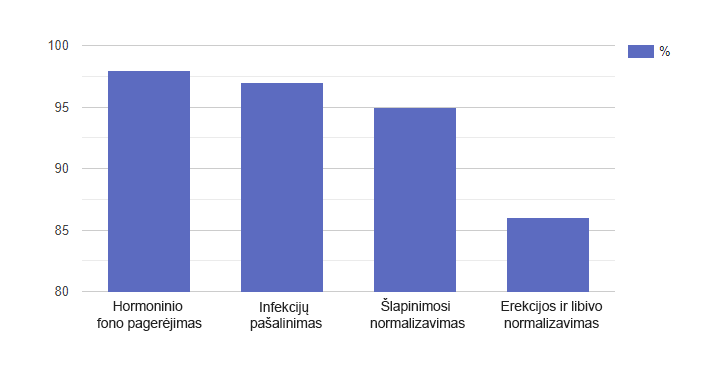

Daktaras Ozas: Vaiva, Juozai, sveiki atvykę į studiją! Vaiva, prieš kelis mėnesius paprašėte mūsų pagalbos. Pasakykite mums, kokia buvo priežastis.
Vaiva K: Taip, aš buvau iniciatorė. Man atrodė, kad mūsų santuoka buvo arti pabaigos dėl to, kad mano vyras labai pasikeitė. Aš jį įkalbėjau paprašyti jūsų pagalbos. Jūsų laida yra paskutinė mūsų viltis. Juozas man nieko nesakė ir nenorėjo kreiptis į specialistus.
Daktaras Ozas: Vaiva, prašau papasakokit, kodėl nusprendėte, kad Juozas pasikeitė?
Vaiva K: Mes neturėjome lytinių santykių maždaug šešis mėnesius. Aš jau nusipirkau seksualius apatinius baltinius ir viriau jam romantiškas vakarienes. Niekas nepadėjo! Atrodė, kad jis visai nebežiūrėjo į mane kaip į moterį. Aišku, kad pirmiausia pagalvojau, jog priežastis yra manyje. Verkiau, jaudinausi... Mes nuolat ėmėme keiktis tuo pagrindu.
Daktaras Ozas: Gal jis turi meilužę. Ar galvojote apie šią įvykių raidą?
Vaiva K: Žinoma, galvojau. Bet jis dirba laisvai samdomu darbuotoju ir didžiąją laiko dalį praleidžia namuose. Jis tiesiog neturi laiko susitikti su meiluže. Bet pasirodo, kad jis turėjo laiko žiūrėti porno.

Daktaras Ozas: Oho, net ir taip!
Vaiva K: Taip, kartą radau jį vonioje. Jis pamiršo uždaryti duris. Tai mane labai įsiutino: vadinasi, su manimi jis atsisako sekso, bet masturbuoja į nepažįstamas nuogas moteris. Mes pradėjome bartis, o Juozas taip smarkiai supyko, kad metė į mane šampūno butelį, kuris pateko man į galvą. Tada pas mane net greitoji pagalba atvažiavo, nes aš kraujavau pakaušyje. Buvo baisu, kad galiu turėti smegenų sutrenkimą. Bet viskas apsiėjo. Aš buvau supratusi, kad kažkas vyksta su Juozu, bet nežinojau, kas būtent.
Daktaras Ozas: Turiu klausimą į Juozą: kas iš tikrųjų nutiko? Kodėl nesakėte žmonai, kokia jūsų šaltumo priežastis?
Juozas K: Pirmiausia noriu pasakyti, kad man gėda dėl savo elgesio. Ir aš noriu atsiprašyti Vaivos prieš visą šalį. Galbūt turėjau jai pasakyti, kas su manimi tikrai buvo. Bet aš pats buvau išgąsdintas: varpoje ejakuliacijos metu atsirado maudinantis skausmas. Po to padažnėjo noras šlapintis padažnėjo, ėmiau pabusti net naktį. Pradėjau blogai miegoti, pablogėjo apetitas ir jaučiausi prislėgtas. Kai prie viso to atsirado dar ir erekcijos problemos, aš visiškai nenorėjau jokio sekso. Aš užsidariau savyje ir bijojau prisipažinti Vaivai, kad turiu problemų. Bijojau, kad tapsiu nepilnaverčiu vyru ir žmona mane paliks. Taip pat tikėjausi, kad viskas kažkaip savaime pagerės.
Daktaras Ozas: Juozai, kaip manote, su kokia problema susidurėte?
Juozas K: Man sunku pasakyti, gal kažkas su prostata.
Daktaras Ozas: Iš tikrųjų jūsų atsakyme yra tiesos dalelė. Mes tai žinome, nes prieš atvykstant į studiją jūs atlikote tyrimus ir jus apžiūrėjo mūsų specialistas. Ar esate pasirengęs išgirsti savo patologijos pavadinimą?
Juozas K: Taip.
Daktaras Ozas: Jūs sergate prostatitu.
Vaiva K: O Dieve!
Daktaras Ozas: Taip, skamba baisiai. Išsiaiškinkime, ar taip yra iš tikrųjų, iš vyrų sveikatos specialisto, kuris buvo jus apžiūrėjęs. Jis šiandien mūsų svečias. Algirdas Žemaitukas, prašom.
Algirdas Žemaitukas: Išties Juozo prostatitas iš
ankstyvos stadijos jau perėjo į ūminę. Ir tai neįvyko per
šešis mėnesius.
Dalykas yra tas, kad pradiniame etape
prostatitas dažniausiai būna besimptomis. Kartais vyras gali
jausti diskomfortą kapšelio ir kirkšnies srityje, sunkumą
pilvo apačioje. Bet dažniausiai jis to tiesiog
nesureikšmina: na, kas gi kreipsis į specialistą
vien dėl to, kad porą kartų nudigė kirkšnį? Juk tai galima
priskirti ir nuovargiui, ir nepatogiems apatiniams...

Kitas požymis – dažnesniai apsilankymai tualete. Neretai dėl to vyrai taip pat pradeda busti naktį. Tiesa, daugelis į tai taip pat nereaguoja. Bet toliau bus tik blogiau: procesas pasunkės, jį lydės deginimo pojūtis ir skausmas, nes susirgusi prostata didės ir suspaus šlaplė. Tuo pačiu metu yra didelė tikimybė, kad uždegimas išplis į kitus organus: šlapimo pūslę, o vėliau ir inkstus.
Žinoma, atsiranda problemos seksualinėje sferoje. Intymumo su partnere noras kyla rečiau, neatsiranda erekcija, nukenčia orgazmo kokybė – visa tai siejama su nuovargiu ir stresus.
Kuo toliau, tuo blogiau. Kai prostatito simptomai pradeda ryškėti, tai gali reikšti tik vieną dalyką - uždegiminis procesas sustiprėjo ir virto aktyvia forma. Jei ir toliau delsite su terapija, viskas gali baigtis prostatos vėžiu!
Jums
gali kilti pavojus!
Atlikite trumpą testą, kad
patikrintumėte savo sveikatą
Atsakykite į 5 klausimus ir sužinokite, ar turite progą nerimui
Ar šlapindamasis jaučiate skausmą ir deginimą?
Ar naktį einate į tualetą daugiau nei vieną kartą?
Ar jaučiatės nervingas ir prislėgtas?
Ar pastebėjote potencijos sumažėjimą?
Kiek jums metų?
Rezultatas:
Ačiū už jūsų atsakymus! Deja, iki lemtingų pasekmių jums liko tik keli žingsniai. Norėdami nenustoti būti vyru tikrąja to žodžio prasme, pradėkite terapiją dabar!
Pradėti veiktiAčiū! Jūs atlikote testą.
Daktaras Ozas: Ar Juozas turi galimybę išsigelbėti be tiesiosios žarnos masažo, žvakučių ir klizmų?
Algirdas Žemaitukas: Deja, dauguma parduodamų produktų geriausiu atveju gali padėti tik kurį laiką. Kai uždegimas vėl paūmės, grįš skausmai ir kiti nemalonūs simptomai.
Bet yra ir gerų žinių - kelias savaites Juozas vartojo naują produktą , kurį giria daugelis ekspertų. Jis turi gebėjimąteigiamai paveikti visos urogenitalinės sistemos veikimą. Visų pirma, padeda pagerinti hormoninį foną, pašalinti infekcijas ir uždegimus, išvalyti kraują, padidinti libido ir sustiprinti erekciją.
Be to, nesukelia priklausomybės ir teigiamai veikia organizmą, nes jame yra natūralių ingredientų.
Šios terapijos dėka Juozo rodikliai žymiai pagerėjo ir dabar jis jaučiasi daug geriau.
Daktaras Ozas: Juozas, ar tikrai pagerėjo?
Juozas K: Tai tiesa. Po kelių dienų, kai vartojau kapsules, mano varpos skausmas dingo. Tada pradėjau rečiau apsilankyti tualete ir net nepabundu naktį. Dabar miegu kaip kūdikis, ir nuotaika pagerėjo, nors nelabai tikėjau, kad kažkas gali man padėti.

Algirdas Žemaitukas: Komponentai yra kruopščiai
subalansuoti, jie visapusiškai veikia problemos priežastį,
taip padidindami terapijos veiksmingumą.
Štai keletas
ingredientų:
- Spanguolių uogų ekstraktas - spanguolėse taip pat yra smulkių molekulių: katechino ir epikatechino, jų derinys skatina testosterono gamybą ir padidina libido;
- Dilgėlių šaknų ekstraktas - pagrindinės šio komponento savybės yra susijusios su prostatos liaukos būklės pagerėjimu;
- Serenoa vaisių ekstraktas (Saw palmetto extract) - šiame ekstrakte yra medžiagų, kurios apsaugo nuo Urogenitalinės sistemos ligų. Saw Palmetto veiklioji medžiaga (β-sitosterolis) gali slopinti uždegiminius procesus. Normalizuoja šlapinimosi procesą dėl inkstų ir šlapimo takų funkcijos palaikymo.
Daktaras Ozas: Studijoje taip pat yra Mykolas Žalėnas, kuris verčiasi platinimu. Laba diena, pone Mykolai! Žinau, kad turite įdomių skaičių, kuriais norėtumėte pasidalinti su mumis.
Mykolas Žalėnas: Laba diena! Iš tikrųjų aš platinu . Neseniai atlikome daugiau nei 300 klientų apklausą. Dauguma jų gavo puikių rezultatų. Apklausa parodė, kad tikrai veikia, tačiau, skirtingai nuo mėlynųjų tablečių, jis turi patvaresnį poveikį, kuris paprastai trunka net ir baigus kursą.
Čia pagrindiniai rezultatai, kurių galime tikėtis iš šio produkto:
- Hormoninio lygio gerinimas: testosteronas ir aldosteronas yra svarbūs prostatos sveikatos hormonai.
- Infekcijos pašalinimas iš urogenitalinės sistemos: patogeniškos bakterijos neturi jokių galimybių gyvuoti.
- Skausmo ir kitų nemalonių simptomų atsikratymas.
- Šlapinimosi normalizavimas.
- Erekcijos normalizavimas ir padidėjęs noras: lytinis aktas gali pailgėti, o libido padidės.
Daugiau apklausos rezultatų skaičiais:

Mažai kokie kiti produktai gali pasigirti tokiais pačiais rodikliais.
Be to, turiu gerų žinių. Dabar taikoma 50% nuolaida. Mes nusprendėme surengti akciją, nes nusprendėme visiškai pereiti prie pardavimo internetu. Vaistinėse padažnėjo padirbimo atvejai ir mes niekaip negalėjome suvaldyti šio momento. Akcija truks tiktai iki (imtinai). Ir vargu ar kada nors dar pasikartos.
- Užpildykite užsakymo formą iki (imtinai).
- Atsakyti į operatoriaus skambutį ir patvirtinti užsakymą.
- Gauti siuntinį artimiausiame pašto skyriuje per 3-6 dienas nuo užsakymo dienos.
Daktaras Ozas: Gerbiami ekspertai ir studijos svečiai, man pagrindinis rezultatas yra išgirsti, kad Juozas Kunčinas jaučiasi geriau, ir pamatyti šypseną jo žmonos Vaivos veide. Labai džiaugiuosi, kad mums pavyko jums padėti. Taip pat džiaugiuosi, kad iškėlėme prostatito temą. Temą, apie kurią visi vyrai mieliau tylėtų. Tikiuosi, po mūsų laidos jie mažiau bijos. Juk dabar galima atsikratyti prostatito be žeminančių procedūrų, pavyzdžiui, vartojant kapsules. Mūsų laida priartėjo prie pabaigos. Aš atsisveikinu su jumis ir iki naujų susitikimų eteryje!
DĖMESIO: Dabar taikoma Akcija. Vyrų sveikatos kapsules galite gauti su 50% nuolaida. Tam turite įforminti paraišką žemiau iki (imtinai). Akcinių prekių skaičius ribotas.
Komentarai